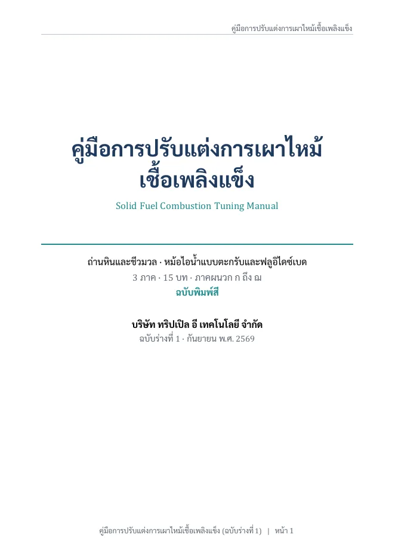
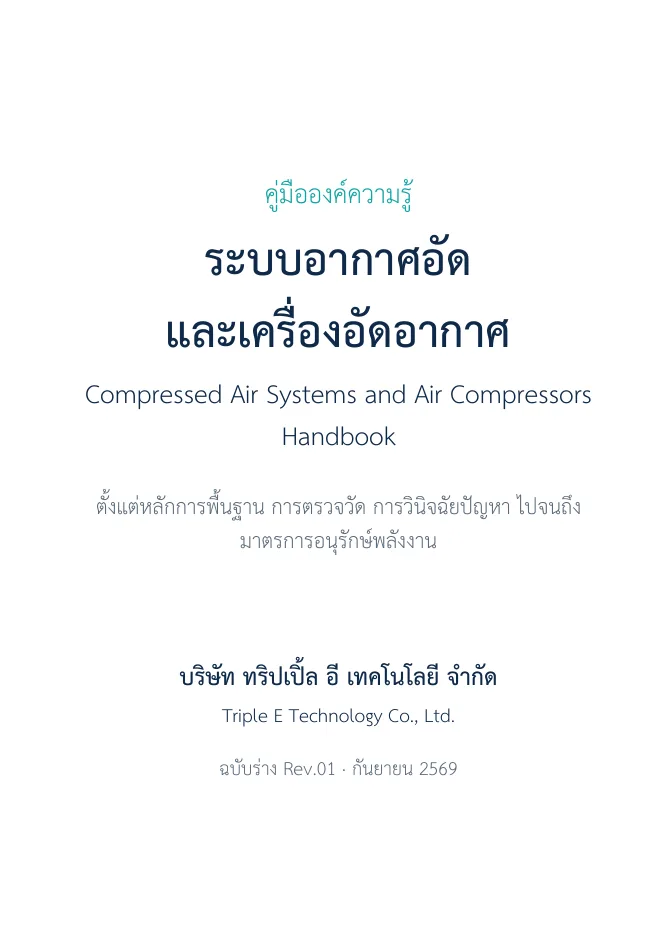
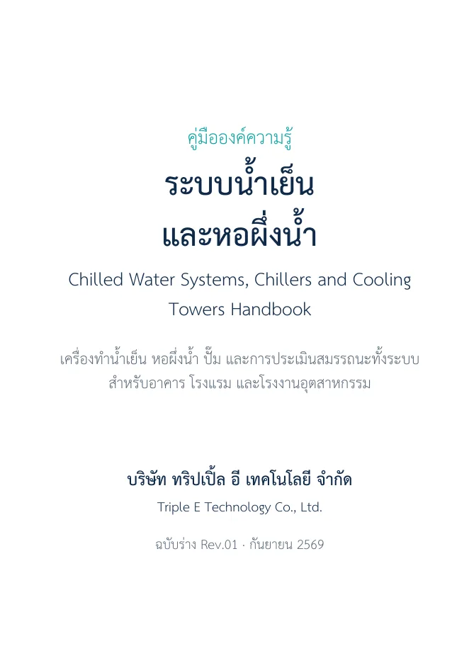
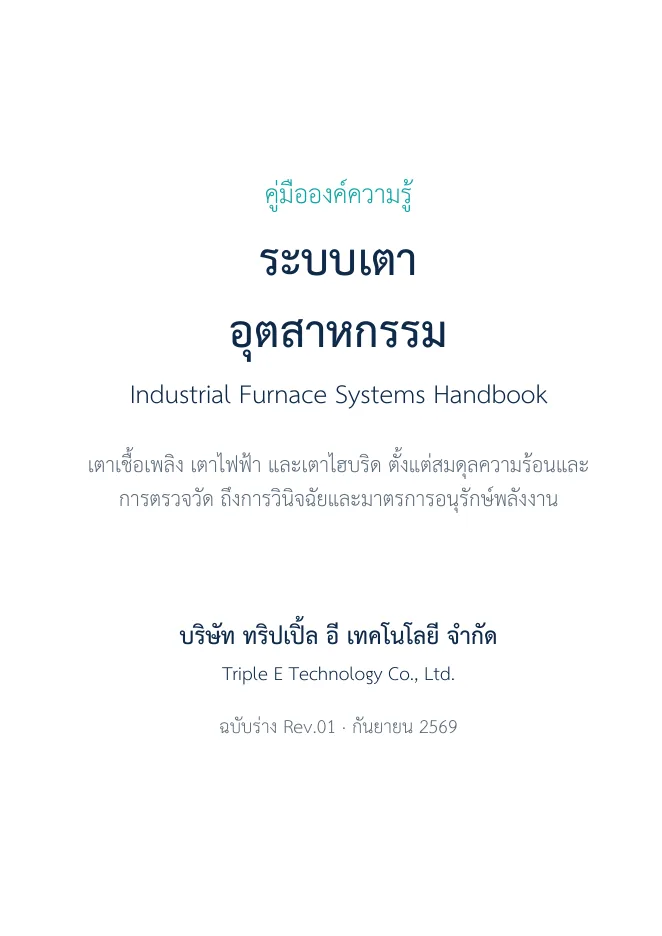

Thermal Systems — ระบบความร้อน
หม้อไอน้ำ · เตาเผา · Gas Turbine & CCGT
Boiler Efficiency Calculator
คำนวณประสิทธิภาพหม้อไอน้ำแบบครบวงจร รองรับมาตรฐานสากล 3 มาตรฐาน พร้อมรองรับเชื้อเพลิงแบบ Custom ตามองค์ประกอบทางเคมี
Steam Master
เครื่องมือครบวงจรสำหรับวิเคราะห์ระบบไอน้ำ ครอบคลุมคุณสมบัติไอน้ำ (Steam Tables), Flash Steam Recovery, การสูญเสียในระบบจ่ายไอน้ำ และการคำนวณ Steam Balance สำหรับโรงงานอุตสาหกรรม
Reheating & Reverberatory Furnace
วิเคราะห์ประสิทธิภาพเตา Reheating Furnace และ Reverberatory Furnace ครอบคลุมการคำนวณการสูญเสียความร้อน ประสิทธิภาพการเผาไหม้ และแนวทางการประหยัดพลังงานในกระบวนการอุตสาหกรรม
GT & CCGT Master Tool
ประเมินและวิเคราะห์ประสิทธิภาพ Gas Turbine (GT) และโรงไฟฟ้า Combined Cycle Gas Turbine (CCGT) ครอบคลุม Thermal Efficiency, Heat Rate, Compressor Ratio, Turbine Inlet Temp และมาตรการ ECM
Steam Turbine Efficiency
วิเคราะห์ประสิทธิภาพ Steam Turbine ครอบคลุม Isentropic Efficiency, Mechanical Efficiency, Steam Flow, Power Output และการสูญเสียพลังงาน พร้อมแนวทาง ECM เพื่อปรับปรุงสมรรถนะกังหันไอน้ำในโรงงานอุตสาหกรรม
Gas Turbine Efficiency
วิเคราะห์ประสิทธิภาพ Gas Turbine ครอบคลุม Compressor Isentropic Efficiency, Combustion Efficiency, Turbine Isentropic Efficiency และ Overall Thermal Efficiency พร้อมประเมิน Heat Rate และแนวทาง ECM ปรับปรุงสมรรถนะกังหันก๊าซ
Refrigeration Systems — ระบบทำความเย็น
NH₃ · Chiller · Cooling Tower · Air Con · Cooling Load · COP · Energy Audit
NH₃ Refrigeration Tool
คำนวณและวิเคราะห์ระบบทำความเย็นแอมโมเนีย (NH₃) ครอบคลุมสมรรถนะระบบ ค่า COP และการใช้พลังงานของระบบ Refrigeration
Hybrid Chiller System Analysis
วิเคราะห์และประเมินประสิทธิภาพระบบ Chiller แบบผสม ทั้ง Electric Chiller และ Absorption Chiller พร้อมคำนวณ COP Cooling Load, Part-Load Performance และมาตรการประหยัดพลังงาน
Cooling Tower Audit Tool
วิเคราะห์และประเมินประสิทธิภาพหอระบายความร้อน ครอบคลุม Range, Approach, CT Efficiency, Merkel Number (NTU), Water Balance (E/D/B/M), COC, Water Chemistry และมาตรการประหยัดพลังงานและน้ำ
Air Conditioning Audit Tool
วิเคราะห์ระบบปรับอากาศทุกประเภท (Split, Package, Chiller, VRF) ครอบคลุม Cooling Load Calculation, Psychrometric Chart, COP/EER เทียบมาตรฐานเบอร์ 1–5 ไทย และมาตรการประหยัดพลังงาน (ECM)
Cooling Load & HVAC Selector
คำนวณโหลดความเย็น 17 ประเภทห้อง (สำนักงาน ห้องนอน ห้องประชุม Data Center, Server, Control Room, ห้องไฟฟ้า MDB/UPS, โรงแรม ร้านอาหาร Lab ฯลฯ) ทั้งโหมด Quick (W/m²) และ Detailed แยกองค์ประกอบผนัง/กระจก/คน/อากาศระบาย พร้อมคำแนะนำเลือก Split / VRF / Chiller / Precision Air แบบ N+1 รวมหลายห้องเป็นโครงการ และประมาณค่าไฟรายปี ด้วยข้อมูล CDD รายจังหวัดจาก Thailand CDD Analyzer
Split AC Calculator
คำนวณและวิเคราะห์สมรรถนะเครื่องปรับอากาศแบบ Split Unit ครอบคลุม EER / COP, Cooling Capacity, Power Consumption เทียบมาตรฐานเบอร์ 5 และประเมินผลประหยัดพลังงานเมื่อเปลี่ยนอุปกรณ์ใหม่
VRV / VRF Calculator
วิเคราะห์สมรรถนะระบบปรับอากาศแบบ VRV/VRF ครอบคลุม COP ที่ภาระต่างๆ (Full Load / Part Load), การออกแบบ Zoning, Piping Length Factor และการประเมินประหยัดพลังงานเทียบกับระบบ Chiller แบบดั้งเดิม
Electrical & Mechanical Systems — ระบบไฟฟ้าและเครื่องกล
คุณภาพไฟฟ้า · บิลค่าไฟและอัตรา · หม้อแปลงและการปรับแท็ป · มอเตอร์ · VFD · ปั๊ม · พัดลม · สถานีสูบน้ำ · กังหันน้ำ · อากาศอัด
Power Quality & Voltage Optimization
วินิจฉัยคุณภาพไฟฟ้าครบวงจร — ความไม่สมดุลเฟสพร้อม derating มอเตอร์ตาม NEMA MG-1, เพาเวอร์แฟกเตอร์ตามอัตรา กฟภ./กฟน. (เกณฑ์ 61.97 % ของ kW), ฮาร์มอนิกตาม IEEE 519/C57.110 และกระแสนิวทรัล — ต่อด้วยการประเมินการปรับแรงดันเพื่อลดค่าไฟ ที่แยก kp ด้านกำลังทันทีออกจาก kp ด้านพลังงาน แล้วเทียบ 5 ทางเลือก ตั้งแต่ปรับแท็ป off-load ฟรี · หม้อแปลง IoT/AVR · AVR แยกตัว · amorphous พร้อมตัวตรวจคำกล่าวอ้างของผู้ขายและแผนพิสูจน์ผลตาม IPMVP
Electricity Bill & Tariff Analyzer
แยกบิลค่าไฟฟ้าเป็นรายการพร้อมกระทบยอดกับบิลจริง คำนวณ Load Factor และค่าไฟเฉลี่ยต่อหน่วย เปรียบเทียบข้ามอัตราค่าไฟ 3.1/3.2/4.1/4.2/5.2/7.1/7.2 แบบแก้ไขได้ทุกช่อง พร้อมเตือนกับดัก 7.1→7.2 ที่ทำให้ค่าไฟเพิ่มถ้าไม่ย้ายเวลาเดินเครื่อง · วิเคราะห์โหลดเฟสไม่สมดุลด้วย symmetrical components ที่แยกพลังงานที่เสียออกจากพิกัดที่เสีย และประเมินความคุ้มค่าในการปลดหม้อแปลงออก
Motor & VFD Energy Audit
ตรวจสอบและประเมินประสิทธิภาพมอเตอร์ไฟฟ้า พร้อมวิเคราะห์ผลประหยัดพลังงาน จากการติดตั้ง VFD ครอบคลุมการวัด Power Factor, Load Factor และแนวทางการอนุรักษ์พลังงาน (ECM) ตามมาตรฐานสากล
Pump & Fan Energy Audit
ตรวจสอบและประเมินสมรรถนะปั๊มและพัดลมในภาคสนาม วิเคราะห์ประสิทธิภาพ Hydraulic Efficiency, System Resistance และ Operating Point พร้อมคำแนะนำมาตรการประหยัดพลังงาน
Pump Station Assessment
ประเมินสถานีสูบน้ำชลประทาน/น้ำดิบหลายปั๊มขนาน: Wire-to-Water Efficiency, SEC (kWh ต่อ 1,000 ลบ.ม.), System Curve ท่อส่งยาวพร้อมตรวจจับการหรี่วาล์ว, มาตรการ VFD/Impeller Trim/TOU/Solar PV และตัวช่วยหาอัตราการไหลเมื่อไม่มี flow meter (pump curve + เครื่องวัดรอบ, drawdown test, slip method)
Hydro Turbine Assessment
ประเมินสมรรถนะกังหันน้ำภาคสนามตามแนวทาง IEC 60041/ASME PTC 18: คำนวณ Head Loss อุโมงค์-Penstock, แยก η กังหัน/เครื่องกำเนิด, Unit Dispatch Optimizer หาจุดสลับ 1↔2 เครื่อง และแผนพลังงานรายเดือน จากน้ำฝน-น้ำท่า (antecedent runoff + เพดาน Q design/น้ำล้น)
Compressed Air System
วิเคราะห์และประเมินประสิทธิภาพระบบอากาศอัด ครอบคลุมการคำนวณ Specific Power, ค่าการรั่วไหล, Pressure Drop และแนวทางประหยัดพลังงาน
GHG & Sustainability — ก๊าซเรือนกระจกและความยั่งยืน
T-VER · TGO · Scope 1-2-3 · Carbon Neutrality · EnMS · Fuel Data
Fuel Database
คลังคุณสมบัติเชื้อเพลิงแข็งและชีวมวล 3,289 ตัวอย่าง ครอบคลุม Proximate, Ultimate, ค่าความร้อน LHV/HHV, อุณหภูมิหลอมเถ้า และองค์ประกอบเถ้า พร้อมคำนวณดัชนี Slagging/Fouling ให้อัตโนมัติ
Emission Factor Selector
เลือกค่า Emission Factor อย่างเป็นทางการจาก TGO ครอบคลุม Scope 1, 2, 3 พร้อมข้อมูลอ้างอิงตามมาตรฐาน T-VER และ Premium T-VER
MLR & CUSUM Dashboard
วิเคราะห์การใช้พลังงานด้วย Multiple Linear Regression และ CUSUM ตามมาตรฐาน ISO 50001 พร้อม Dashboard แบบครบวงจร
Biogas & Power Gen Audit Tool
คำนวณศักยภาพการผลิตไบโอแก๊สจากน้ำเสีย (COD Balance Method) ประเมินการผลิตไฟฟ้า ไอเสียเครื่องยนต์แก๊ส WHR Potential และการลดก๊าซเรือนกระจก สำหรับโรงงานแป้งมัน ปาล์ม สุรา น้ำตาล
CFO Project Manager
ระบบจัดการโครงการจัดทำคาร์บอนฟุตพริ้นท์องค์กร (CFO) ตามแนวทาง TGO ครอบคลุมการกำหนดขอบเขต ทะเบียนแหล่งปล่อย Scope 1-2-3 คำนวณการปล่อย GHG พร้อมประเมินความไม่แน่นอนและจัดเตรียมเอกสารทวนสอบ
Energy Conservation Project — โครงการอนุรักษ์พลังงาน
ECM Portfolio · M&V · MACC · Waste Heat Recovery · Heat Loss · ฉนวนความร้อน · Heat Balance · Economizer · Hot Air Dryer
ECM Portfolio & M&V Integrator
รวมมาตรการอนุรักษ์พลังงานจากทุกเครื่องมือ (นำเข้าไฟล์ TE_ECM จากปุ่ม 📤) แล้วแก้ผลซ้อนตามสายพลังงาน — ลดการใช้ก่อน เพิ่มประสิทธิภาพทีหลัง ไม่นับซ้ำ — คำนวณ Payback, NPV, IRR พร้อมเงินสนับสนุน พพ., BOI, ESCO/ลีสซิ่ง และรายได้คาร์บอนเครดิต จัดลำดับด้วย MACC (฿/tCO₂e) และวางแผนพิสูจน์ผลตาม IPMVP Option A–D
WHR Calculator
คำนวณและวิเคราะห์ศักยภาพการนำความร้อนทิ้งกลับมาใช้ประโยชน์ ครอบคลุม Heat Balance ของแหล่งความร้อนทิ้ง (ไอเสีย, น้ำร้อน, ไอน้ำ) การเลือกเทคโนโลยี WHR และการประเมินผลประหยัดพลังงาน
Distribution Loss Calculator
คำนวณและวิเคราะห์ความสูญเสียในระบบจ่ายพลังงาน ครอบคลุมการสูญเสียความร้อน ในท่อไอน้ำ, ท่อน้ำร้อน และระบบอากาศอัด พร้อมประเมินศักยภาพการประหยัดพลังงาน จากการปรับปรุงฉนวนและมาตรการ ECM
Equipment Heat Loss & Insulation
คำนวณการสูญเสียความร้อนของถัง หม้อผสมสาร ถังเก็บสารเคมี และอุปกรณ์กระบวนการ โดยเลือกรูปทรงเรขาคณิต 3 มิติจากคลัง 20 แบบ (ทรงกระบอก · หัวถัง 2:1 Ellipsoidal · ASME F&D · กรวย · ทรงกลม ฯลฯ) มาประกอบกันได้ถึง 7 ชิ้น พร้อมเทียบผลก่อน–หลังหุ้มฉนวน ผลประหยัด และความหนาฉนวนที่คุ้มค่าที่สุด
Hot Air Dryer Assessment
ประเมินประสิทธิภาพระบบอบแห้งด้วยลมร้อน โดยทำสมดุลความร้อนและสมดุลมวลน้ำ คำนวณพลังงานจำเพาะในการระเหยน้ำ (SEC / SMER) ความสูญเสียจากลมทิ้ง ผนัง และอากาศส่วนเกิน พร้อมประเมินศักยภาพมาตรการประหยัดพลังงาน เช่น การหมุนเวียนลมกลับ (air recirculation) และการนำความร้อนทิ้งกลับมาใช้
Troubleshooting — วินิจฉัยปัญหาระบบ
Low ΔT Syndrome · L/G Overflow · Slagging & Fouling · Steam Trap · Heat Exchanger Fouling · Cascade Control Setting
เครื่องมือกลุ่มนี้ต่างจากกลุ่มอื่น — กลุ่มอื่นตอบคำถามว่า “ระบบนี้มีประสิทธิภาพเท่าไร” แต่กลุ่ม Troubleshooting ตอบคำถามว่า “ทำไมระบบถึงมีอาการแบบนี้ และสาเหตุที่เป็นไปได้มีอะไรบ้าง เรียงตามความน่าจะเป็น” — ป้อนค่าตรวจวัดจริง ได้ผลเป็นอันดับสาเหตุที่เป็นไปได้ พร้อมหลักฐานเชิงตัวเลขและสิ่งที่ต้องไปวัดเพิ่มเพื่อยืนยัน
Chilled Water ΔT Diagnostic
วินิจฉัยอาการ Low Delta T ของระบบ Chilled Water เทียบ Design กับ Actual คำนวณ Excess Flow, Excess Pump kW ตาม Affinity Law, จัดอันดับ AHU/FCU ที่ Overflow หนักสุด (High Flow + Low ΔT), ตรวจจับ Bypass ด้วยส่วนต่าง Plant ΔT กับ Chiller ΔT พร้อมประเมินศักยภาพ DP Reset (Trim & Respond) และ PICV
Cooling Water Loop Diagnostic
ตอบคำถามว่า “น้ำหล่อเย็นร้อนขึ้น เพราะอากาศร้อน หรือหอเสื่อม” โดยแยก Approach จริงออกจาก Wet Bulb ของวันนั้น พร้อมจำลองผลของการเพิ่ม Flow (L) เทียบการเพิ่มลม (G) ต่อ L/G Ratio และเตือนกรณี “เพิ่ม Flow แล้วน้ำ Supply ร้อนขึ้น” พร้อมประเมิน Recirculation และ Adiabatic Pre-cooling
Heat Exchanger Fouling Diagnostic
ติดตามการเสื่อมสภาพของอุปกรณ์แลกเปลี่ยนความร้อน (PHE, Shell & Tube, Condenser, Economizer) จาก LMTD และ UA ที่วัดได้จริง คำนวณ Fouling Factor (Rf) และ % การเสื่อมเทียบสภาพสะอาด พร้อมแปลงเป็นต้นทุนพลังงาน บาท/ปี และจุดคุ้มทุนที่ควรเข้าล้าง
Steam Trap & Condensate Diagnostic
แยกให้ออกระหว่าง Flash Steam ปกติ กับ Live Steam รั่วผ่านกับดัก — สาเหตุของการวินิจฉัยผิดที่พบบ่อยที่สุดหน้างาน คำนวณอัตราการรั่วจากขนาดรูตาม Napier มูลค่าความสูญเสียต่อปี อัตราการเก็บคอนเดนเสตกลับ และตรวจ Waterlogging จาก ΔT คร่อมดัก
Slagging & Fouling Predictor
ทำนายการเกิดและความรุนแรงของ slagging, fouling และการกัดกร่อนอุณหภูมิสูง จากองค์ประกอบเถ้า ค่า AFT และอุณหภูมิเตาจริง คิดคะแนนแยกสามโรค รวมผลของมลทินที่ติดมากับเชื้อเพลิง (ดิน ทราย หินปูน) คลังเชื้อเพลิงไทย 19 ชนิด และตัวช่วยหาสัดส่วนผสมสูงสุดที่ยังผ่านเกณฑ์
Cascade Control Simulator
วินิจฉัยว่าทำไมความดัน/อุณหภูมิเฉลี่ยสูงเกินจำเป็นและเครื่องสลับ load/unload ถี่ จากการตั้งค่า cascade เหลื่อมรายเครื่อง — จำลอง pressure/temperature dynamics แบบ time-step ของเครื่องอัดอากาศ (≤ 6), หม้อไอน้ำ (≤ 4) และ chiller (≤ 4) เทียบกับ Master single set point + lead/lag/trim พร้อมค่าแนะนำ set point · band · delay · local backup, คลัง Load Profile 9 แบบ, ทดสอบทุกโปรไฟล์ และ optimizer หาค่าตั้งที่ดีที่สุดข้ามโปรไฟล์ถ่วงน้ำหนัก
Conversion & Properties — หน่วยและคุณสมบัติ
FAD · Nm³ · Sm³ · Actual Flow · Psychrometrics · Degree Days · หน่วยวิศวกรรมทั่วไป
Gas & Air Flow Unit Converter
แปลงหน่วยการไหลของก๊าซ อากาศ และอากาศอัด ระหว่าง FAD (20 °C, 65 %RH), Nm³/min (0 °C, 0 %RH), Sm³/min (15 °C, 0 %RH) และ Actual flow ตามสภาวะตรวจวัดจริง พร้อมคำนวณมวลไหล ความหนาแน่น น้ำกลั่นตัว ความเร็วในท่อ และหน่วยวิศวกรรมทั่วไป
Psychrometric Chart & Air Properties
คำนวณคุณสมบัติอากาศชื้นครบชุด (DB, WB, RH, จุดน้ำค้าง, W, h, v, ρ) จากค่าที่วัดได้เพียง 2 ค่า พร้อมแผนภูมิไซโครเมตริกแบบโต้ตอบ และวิเคราะห์กระบวนการคอยล์เย็น ผสมอากาศ อบแห้ง พร้อมโหลด Sensible/Latent และ SHR
Thailand CDD Analyzer
วิเคราะห์ Cooling / Heating Degree Days รายเดือนย้อนหลัง 3 ปี ครบ 77 จังหวัด จากข้อมูล ERA5 (Open-Meteo) — ปรับ base temperature −25 ถึง +35 °C เลือกกระเปาะแห้ง/กระเปาะเปียก หรือ %RH เฉลี่ย พร้อมแผนที่ choropleth รายจังหวัด เปรียบเทียบหลายจังหวัด และ Regression หา Energy Baseline (E = a + b·ผลผลิต + c·DD) พร้อม Optimize balance point และ CV(RMSE)
Fuel & Flue Gas Converter
แปลงราคาเชื้อเพลิงจาก บาท/kg, บาท/ตัน, บาท/ลิตร, บาท/Nm³, บาท/Sm³ เป็น บาท/GJ และ บาท/MJ พร้อมต้นทุนความร้อนใช้งานจริงหลังหักประสิทธิภาพ และตารางจัดอันดับเชื้อเพลิงหลายชนิด · แปลง LHV ↔ HHV ทุกฐาน · ปริมาณเป็น GJ/toe · แก้ค่ามลพิษที่ O₂ อ้างอิง · ppm ↔ mg/Nm³ · ไอเสียแห้ง/เปียก
Knowledge Library — คลังหนังสือและคู่มือ
อ่านออนไลน์เท่านั้น · ไม่อนุญาตให้ดาวน์โหลดหรือสั่งพิมพ์
คู่มือการปรับแต่งการเผาไหม้เชื้อเพลิงแข็ง

คู่มือฉบับสมบูรณ์ 15 บท พร้อมภาคผนวก ก–ฌ ครอบคลุมทฤษฎีการเผาไหม้ การตรวจวัด การจูนอากาศ ตะกรัน–คราบ ระบบเถ้า การวินิจฉัยปัญหา KPI กฎหมาย และความปลอดภัย สำหรับหม้อไอน้ำตะกรับและฟลูอิไดซ์เบด ที่ใช้ถ่านหินและชีวมวลไทย
คู่มือระบบอากาศอัดและเครื่องอัดอากาศ

คู่มือ 15 บท พร้อมภาคผนวก ก–ซ ตั้งแต่เทอร์โมไดนามิกส์ของการอัด ฐานอ้างอิง FAD ชนิดเครื่องทุกประเภท การควบคุม dryer ระบบท่อ ลมรั่ว ฝั่งการใช้งาน การตรวจวัดและ M&V การนำความร้อนกลับ และความปลอดภัย พร้อมตัวอย่างคำนวณ 95 ตัวอย่างและกรณีศึกษาโรงงานไทย
คู่มือระบบน้ำเย็นและหอผึ่งน้ำ

คู่มือ 16 บท พร้อมบทส่งท้ายและภาคผนวก ก–ซ ครอบคลุมภาระความเย็น เครื่องทำน้ำเย็นทุกชนิด เครื่องดูดซึม พฤติกรรมภาระบางส่วน ปั๊มและ low ΔT หอผึ่งน้ำ คุณภาพน้ำ การตรวจวัดและ ความไม่แน่นอน การวินิจฉัยปัญหา มาตรการอนุรักษ์พลังงาน EnPI/M&V และกฎหมาย พร้อมตัวอย่างคำนวณ 78 ตัวอย่าง แบบฝึกหัด 117 ข้อพร้อมเฉลย
คู่มือระบบเตาอุตสาหกรรม

คู่มือ 16 บท พร้อมบทส่งท้ายและภาคผนวก ก–ฌ ครอบคลุมเตาเชื้อเพลิง เตาไฟฟ้า และเตาไฮบริด ตั้งแต่สมดุลความร้อน หัวเผาและการเผาไหม้ ผนังและช่องเปิด การนำความร้อนทิ้งกลับมาใช้ การตรวจวัดภาคสนาม เตาอุ่นเหล็กก่อนรีด เตาอบอ่อน เตาหลอมโลหะ เตาแก้ว เตาเหนี่ยวนำและ EAF ถึงการวินิจฉัย มาตรการอนุรักษ์พลังงาน LCC และ EnPI/M&V พร้อมตัวอย่างคำนวณ 111 ตัวอย่าง แบบฝึกหัด 123 ข้อพร้อมเฉลย
Energy Sense Games — เกมพลังงาน
เรียนรู้พลังงานผ่านการเล่น · เด็ก ๆ เล่นได้ ผู้ใหญ่เล่นดี · ใช้เปิดกิจกรรม/ห้องอบรม
บ้านประหยัดไฟ
ช่วยน้องในบ้านให้ "ยิ้ม" และทำให้มิเตอร์ไฟหมุนช้าที่สุด — ปรับอุณหภูมิแอร์ ปิดม่านบังแดด ปิดประตู เปลี่ยนหลอดไฟ แล้วดูผลทันทีจากมิเตอร์จานหมุนและสีหน้าตัวละคร 3 ด่าน + ด่านโบนัส 30 วินาที เก็บดาว 1–3 ดวงทุกด่าน สอนเรื่อง "ความไวของพลังงานต่อปัจจัย" โดยไม่ต้องใช้สูตร พร้อมโหมดผู้ใหญ่ดูค่า kW และ บาท/ชั่วโมง จากสัดส่วนการใช้ไฟจริง
นักสืบพลังงาน
บิลเดือนนี้พุ่ง! ถือแว่นขยายจิ้มอุปกรณ์ในบ้าน เทียบกราฟ "เดือนก่อน vs เดือนนี้" แล้วจับตัวการให้ได้ในจำนวนครั้งน้อยที่สุด — มีด่าน "ตัวหลอก" สอนว่า เครื่องใหญ่ไม่ใช่ตัวการเสมอไป ตัวที่ "เปลี่ยน" ต่างหากคือผู้ร้าย และด่านอากาศร้อนที่เชื่อมไปเรื่อง Energy Baseline ของผู้ใหญ่ 4 ด่าน พร้อมคู่มือสอนเล่นในตัว
ปราบแอร์ตัวร้าย
เจ้าแอร์จอมตะกละกำลังกินค่าไฟบ้านเรา! ถูฟิลเตอร์ให้สะอาด ปิดแอร์ห้องว่าง ตั้งเวลานอน 26 °C ผ่านมินิเกม 4 ด่านจบใน 3 นาที — ทำดีแล้วเจ้าแอร์จะผอมลง จนยอมแพ้ จบเกมเทียบบิล "บ้านเรา vs บ้านข้างบ้าน" เหมาะแจก QR ในโรงเรียนและกิจกรรมประหยัดพลังงาน พร้อมคู่มือสอนเล่นในตัว
โรงงานหรรษา
ช่วยผู้จัดการโรงงานลดค่าไฟโดยของต้องผลิตได้เท่าเดิม — ปั๊มน้ำเลือก "หรี่วาล์ว vs ลดรอบ VFD" (กฎ Affinity รอบ³) อุดลมรั่วเครื่องอัดอากาศ และหุ้มฉนวนท่อไอน้ำ (ระวังตัวหลอก: ท่อน้ำเย็นไม่ต้องหุ้ม!) จบเกมมีแท่งเทียบว่ามาตรการไหนประหยัด บาท/ปี มากที่สุด เหมาะทั้งเด็กโตและเปิดอบรม ผชร./ผอส. พร้อมคู่มือสอนเล่นในตัว
ล่าไอน้ำรั่ว
ไอน้ำรั่วคือเหรียญที่ลอยหายไปทุกนาที — ใช้หูฟังช่างไล่ฟังเสียงฟู่ และกล้องความร้อนหาจุดร้อน/เย็นผิดปกติ แล้วขันหน้าแปลน เปลี่ยน steam trap ให้ทัน มีทั้ง trap เปิดค้างและ trap ตัน (จุด "เย็น" ก็ผิดปกติได้!) ตัวเลขเบื้องหลังจากสูตร Napier จริง — รูรั่ว 3 มม. ที่ 7 bar g ≈ 3 แสนบาท/ปี พร้อมคู่มือสอนเล่นในตัว
กัปตันหม้อไอน้ำ
โหลดไอน้ำขึ้นลงเป็นคลื่น ผู้เล่นคุม 2 สไลเดอร์: เชื้อเพลิง และ อากาศ — อากาศน้อยควันดำพุ่ง อากาศมากความร้อนหนีทางปล่อง เปลวไฟเปลี่ยนสีบอกทุกอย่าง คุมเกจแรงดันให้อยู่โซนเขียว อยู่รอดให้นานที่สุดด้วยประสิทธิภาพสูงสุด ฟิสิกส์ Excess Air / Siegert อย่างง่ายจากงานตรวจวัดจริง เหมาะเปิดสัมมนาหม้อไอน้ำ พร้อมโหมดฝึก 3 ด่านและคู่มือสอนเล่นในตัว
เมืองคาร์บอนต่ำ
บริหารโรงไฟฟ้า 5 ชนิด — โซลาร์ เขื่อน ชีวมวล ก๊าซ ถ่านหิน — ให้ผลิตเท่าดีมานด์ที่เปลี่ยนตามเช้า-เที่ยง-เย็น-คืน ระวังเมฆบังแดดทำโซลาร์หายวูบ! ไฟขาดเมืองดับ ไฟเกินเสียเงินเปล่า และหลอด CO₂ จะบอกว่าเมืองเราเขียวแค่ไหน ด่านท้ายคือภารกิจ Carbon Neutrality ลด CO₂ 30% โดยไฟห้ามดับ ตัวเลข EF อิงกริดไทยจริง พร้อมคู่มือสอนเล่นในตัว
Energy Skills Lab — เกมฝึกทักษะช่างและวิศวกร
ช่าง ปวช./ปวส. · อาชีวะ · มหาวิทยาลัย · วิศวกรใหม่ — ฝึกทักษะหน้างานและวิเคราะห์ด้วยฟิสิกส์จริง
ช่างวัดมือทอง
ฝึกการตรวจวัดภาคสนาม 5 สถานการณ์ — power analyzer มอเตอร์ 3 เฟส, เครื่องวิเคราะห์ไอเสียหม้อไอน้ำ, IR gun กับค่า emissivity, pitot traverse และ ultrasonic flowmeter วัดผิดจุดได้ค่าเพี้ยนแบบสมจริงพร้อมเฉลยว่าทำไม — เหมาะเปิดภาคปฏิบัติ ผชร./ผอส. ก่อนจับเครื่องมือจริง
กะเช้าห้องหม้อไอน้ำ
เดินเครื่องหนึ่งกะ: ทดสอบหลอดแก้วระดับน้ำ, blowdown, ทดสอบ safety valve, จด log แล้วรับมือเหตุสุ่ม — ระดับน้ำต่ำ ความดันเกิน ไฟดับ — ทำผิดลำดับเกมเฉลยทันทีว่าอันตรายอย่างไร (เช่น ห้ามเติมน้ำเย็นเมื่อมองไม่เห็นระดับน้ำ, ต้อง purge ก่อนจุดไฟ)
หมอเครื่องจักร
ใช้กระเป๋าหมอ 4 อย่าง — หูฟัง เครื่องวัดสั่น (สเปกตรัม 1×/2×) IR gun และ clamp meter วินิจฉัย unbalance, เยื้องศูนย์, แบริ่งเสีย, สายพานหย่อน, cavitation, เฟสไม่สมดุล เกณฑ์สั่นตาม ISO 10816-3 — ตรวจน้อยครั้งแต่วินิจฉัยถูกได้ดาวเยอะ
ช่างปลอดภัย LOTO
ก่อนซ่อมต้องเข้าสู่ zero energy state: ตัดไฟ ลม ไอน้ำ ไฮดรอลิก ปลดพลังงานสะสม แขวนกุญแจ+ป้าย try-start ยืนยัน และเลือก PPE ให้ตรงงาน — 5 งานซ่อมจริงรวมงานกลุ่ม group lock box อิงขั้นตอน OSHA 1910.147
ช่างแอร์มือโปร
ต่อเกจถูก port เลือกน้ำยา R32/R410A แล้วอ่านความดัน–อุณหภูมิ คำนวณ superheat / subcooling วินิจฉัยน้ำยาขาด/เกิน คอยล์ร้อนตัน ฟิลเตอร์ตัน คอมเพรสเซอร์อ่อน ท่อตัน ซ่อมให้คุ้มในงบจำกัด ตาราง P-T อิงค่าอิ่มตัวจริงของน้ำยา
ต่อตู้สตาร์ทมอเตอร์
ลากสายต่อวงจรกำลังและวงจรควบคุมจริงในตู้ — เบรกเกอร์ คอนแทคเตอร์ โอเวอร์โหลด ปุ่ม Start/Stop self-hold interlock ไทม์เมอร์ กด "ทดสอบจ่ายไฟ" แล้วเกมจำลองการทำงานตามที่ต่อ ต่อผิดเห็นผลทันที: ลัดวงจร มอเตอร์หมุนกลับ ปล่อยปุ่มแล้วดับ
สงครามพีค
ลากงานเครื่องจักรบนไทม์ไลน์ 24 ชม. ใช้แบตเตอรี่และโซลาร์ตัดพีค ให้บิลค่าไฟ TOU ทั้งค่าพลังงาน On/Off-Peak และ Demand charge ต่ำที่สุด โดยงานผลิตเสร็จทัน deadline — เรื่องใกล้ตัวทุกโรงงาน ใช้เปิดสัมมนาไฟฟ้าได้
ปั๊มพาเหรด
ปรับรอบ VFD วาล์ว ใบพัด จำนวนปั๊มขนาน/อนุกรม ดูจุดทำงานวิ่งบนกราฟ H–Q สด ให้อยู่โซน BEP และกินไฟน้อยที่สุด — เห็นว่าทำไมปั๊ม 2 ตัวขนานไม่ได้น้ำ 2 เท่า และแก้ cavitation ด้วย NPSH
ภารกิจลมเย็น
ปรับลมใหม่ คอยล์เย็น และ reheat ให้อากาศเข้าโซนเป้าหมายบนแผนภูมิไซโครเมตริก ที่วาดจาก engine ASHRAE จริง — เห็นการผสมอากาศ การลดความชื้น น้ำกลั่นตัว และ kW คอยล์ทุกครั้งที่ขยับ ห้องเรียน ห้องผ่าตัด ห้องเก็บยา
เชฟเชื้อเพลิง
ผสมเชื้อเพลิงไทย 8 ชนิดให้ได้ ค่าความร้อน ความชื้น เถ้า และ บาท/GJ ตามสเปก โดยไม่ให้ดัชนี B/A, Alkali index และ Cl เกินเกณฑ์ — ผสมพลาด "บอสตะกรัน" โผล่ในหม้อไอน้ำ! ฉลากโภชนาการเชื้อเพลิงคำนวณสดทุกการผสม
PID Hero
จูนตัวควบคุม PID คุมความดันไอ ระดับน้ำดรัม และอุณหภูมิไอร้อน ดูกราฟ response วิ่งสด วัด overshoot, settling time, IAE — มีด่าน Ziegler–Nichols หา Ku/Pu, กระบวนการ integrating และวาล์วอิ่มตัวกับ anti-windup ใช้ประกอบคู่มือ PID หม้อไอน้ำ
Baseline Buster
ลากเส้นแนวโน้มด้วยมือแข่งกับ OLS เลือกตัวแปร (ผลผลิต, CDD) อ่าน R² / CV(RMSE) / t-stat ตัด outlier อย่างมีเหตุผล แล้วใช้ CUSUM จับเดือนที่มาตรการเริ่มผล — ภาคผู้ใหญ่ของ "นักสืบพลังงาน" ใช้เปิดหลักสูตร regression ได้ทันที
CCGT Dispatcher
สตาร์ท GT ตามลำดับ กด sync ให้ตรงจังหวะ แล้วตามคำสั่ง dispatch ด้วย heat rate ต่ำที่สุด — เลือก 2-on-1 หรือ 1-on-1, รับมือบ่ายร้อน 38 °C ที่กำลังผลิตตก, inlet fogging สมรรถนะ part-load และ ambient correction สมจริงระดับ F-class
Carbon Trader
บริหารโรงงาน 5–10 ปีให้ถึงเป้าลดก๊าซเรือนกระจก — อ่าน MACC เลือกมาตรการ Scope 1/2 (LED, VFD, จูนหม้อไอน้ำ, ชีวมวล, โซลาร์+พค.2) เทียบซื้อคาร์บอนเครดิตที่ราคาขึ้นทุกปี วัดผลด้วย NPV และสัดส่วนเครดิต
Thai Gas Grid — ภารกิจพลังงานมั่นคง
รับบทผู้บริหารระบบก๊าซของประเทศ ซื้อ LNG · ผลิตก๊าซอ่าวไทย · ส่งจ่ายให้โรงไฟฟ้า โรงงาน และภาคขนส่ง ให้ทันดีมานด์ที่ขึ้นลงรายช่วงเวลา พร้อมผังระบบ Single Line Diagram ที่เส้นไหลหนาบางตามแผนจริง และแท็บสอนเล่นทีละขั้น
เกี่ยวกับแพลตฟอร์มนี้
ไม่มีการเก็บข้อมูลส่วนตัว ใช้ได้ฟรีตลอด
หลัง load แล้ว คำนวณได้โดยไม่ต้องใช้ internet
ใช้งานได้ทั้งบน PC, Tablet และ Smartphone
อ.หนึ่ง กลับทวี — ผู้เชี่ยวชาญด้านพลังงาน